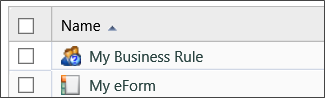
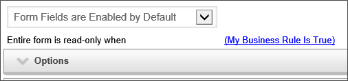
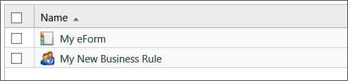
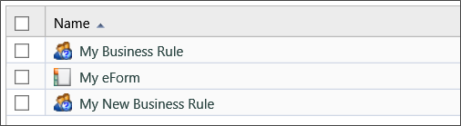
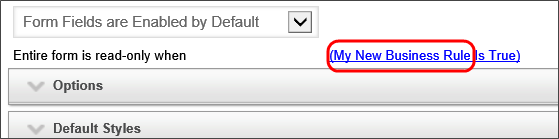

Process Director is a content management system that provides control, security and management of your digital data. This topic provides the essentials for managing objects in the database. All data and documents are typically stored in the database
All content is viewed through the use of Knowledge Views. A Knowledge View defines what data in the repository should be displayed. It is also used to view the Content List.
To view content in the Process Director database for v6.0.X or lower, click on the Content List navigation button in the Admin Profile Workspace.
For v6.1.X or higher, the content list can be displayed by clicking the Content List menu item at the top of the page.
The Content List is a hierarchical list of all Process Director objects. The Content List includes all of the objects created in Process Director, such as Forms, Process Timelines, Knowledge Views, etc. In addition, the Content List can include uploaded files such as Excel spreadsheets used to import data, Word documents used as templates for output documents, and any other files that become part of a process definition.
The Content List consists of a folder structure that is located on the left side of the screen, and a folder/file list that is displayed on the right side of the screen. Navigation through the Content List is done by clicking on a folder on either side of the screen.
Many users think of the Content List as a file system that users can create inside of Process Director, but this isn't really correct. The Content List organizes Process Director objects in a logical fashion for users who are browsing through the system, but the actual objects in Process Director aren't organized in the way that the Content List displays.
For instance, in a file system, the file name is the key element for identifying a file. Let's say you have a word document named "sample.docx", and you change the name to "NewSample.docx". If you go into Microsoft Word, and try to open the "sample.docx" file from the list of recent files, you'll receive a message telling you that the file can't be found. Changing the name of the file changes the identity of the file on your computer, making any references to the old file name invalid.
In Process Director, on the other hand, an object's name doesn't affect the identity of the object. Process Director tracks objects by a unique ID that you, as an end user will rarely, if ever, use. The object name is merely an attribute of the object that you can change at will without Process Director losing track of the object. Here's an example that demonstrates how object tracking works in Process Director.





By the way, you can see the ID that Process Director uses to identify an object by opening the object definition. On a Form, for example, at the bottom of the Form definition screen, you'll see the property for the Form URL, written in a format similar to:
https://ServerName.com/form.aspx?pid=dc1c51ea-612e-48c0-8cc6-4ff9276cbfc9&formid=aa213c6f-a8aa-454f-a04d-30b56fd2e493
The "formid" URL parameter contains the ID that Process Director uses to uniquely identify the Form object, which, in this example, is
aa213c6f-a8aa-454f-a04d-30b56fd2e493
Changing the name of the Form, or any other property, doesn't change this ID. So, you can identify the Form with a name that is easily readable by humans, while Process Director identifies the Form with this ID, which is easily readable by computers.